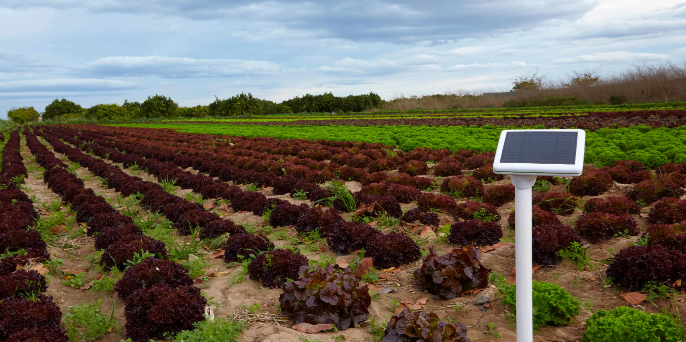
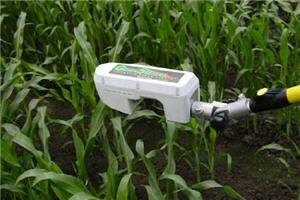
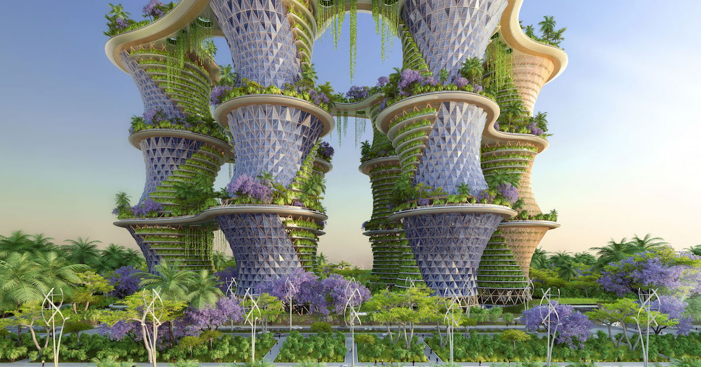
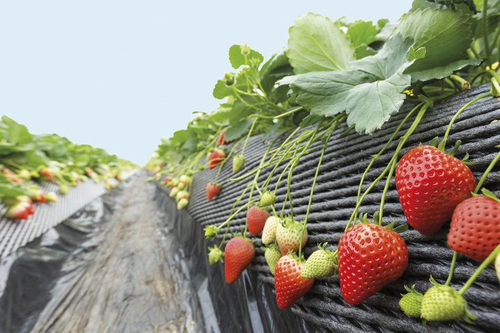
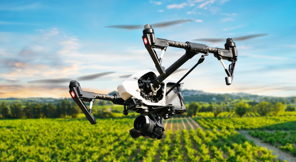
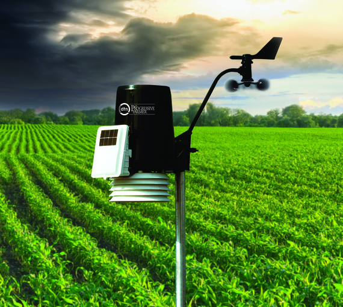
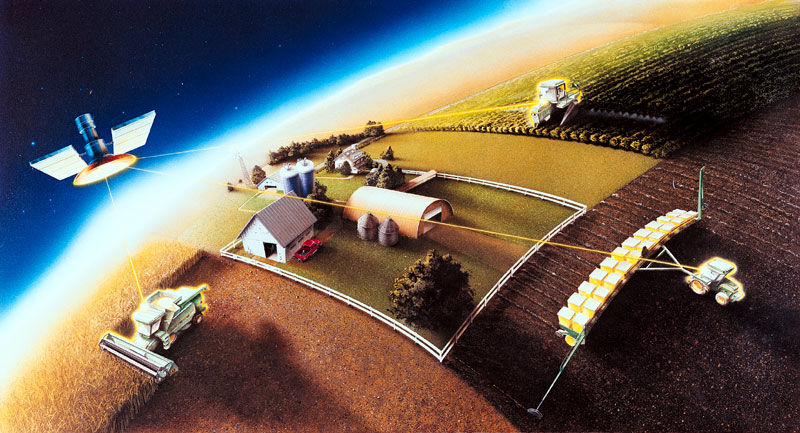
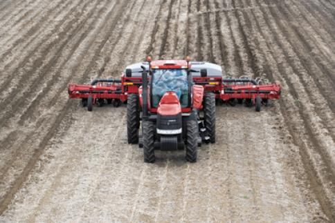
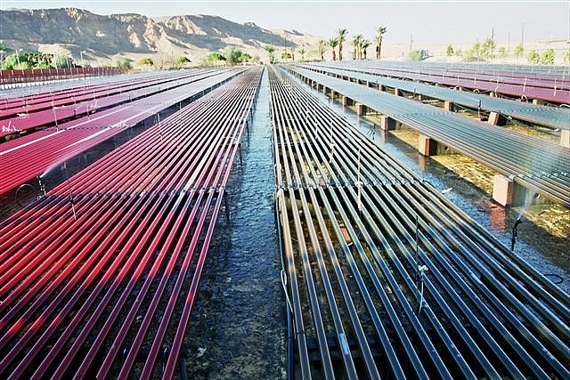

Fundamental additions of the automated farm, these sensors would enable a real time understanding of current farm, forest or body of water conditions. Scientifically viable in 2013; mainstream and financially viable in 2015.

Instead of prescribing field fertilization before application, high-resolution crop sensors inform application equipment of correct amounts needed. Optical sensors or drones are able to identify crop health across the field (for example, by using infra-red light). Scientifically viable in 2015; mainstream in 2018; and financially viable in 2019.

A natural extension of urban agriculture, vertical farms would cultivate plant or animal life within dedicated or mixed-use skyscrapers in urban settings. Using techniques similar to glass houses, vertical farms could augment natural light using energy-efficient lighting. The advantages are numerous, including year-round crop production, protection from weather, support urban food autonomy and reduced transport costs. Scientifically viable in 2023; mainstream and financially viable in 2027.

The Netherlands is famed for the efficiency of its fruit- and vegetable-growing greenhouses, but these operations rely on people to pick the produce. “Humans are still better than robots, but there is a lot of effort going into automatic harvesting,” says Eldert van Henten, an agricultural engineer at Wageningen University in the Netherlands, who is working on a sweet-pepper harvester. The challenge is to quickly and precisely identify the pepper and avoid cutting the main stem of the plant. The key lies in fast, precise software. “We are performing deep learning with the machine so it can interpret all the data from a colour camera fast,” says van Henten. “We even feed data from regular street scenes into the neural network to better train it.”

The Food and Agriculture Organization of the United Nations estimates that 20–40% of global crop yields are lost each year to pests and diseases, despite the application of around two-million tonnes of pesticide. Intelligent devices, such as robots and drones, could allow farmers to slash agrichemical use by spotting crop enemies earlier to allow precise chemical application or pest removal, for example. “The market is demanding foods with less herbicide and pesticide, and with greater quality,” says Red Whittaker, a robotics engineer at Carnegie Mellon who designed and patented an automated guidance system for tractors in 1997. “That challenge can be met by robots.”

Smart collars — a bit like the wearable devices designed to track human health and fitness — have been used to monitor cows in Scotland since 2010. Developed by Glasgow start-up Silent Herdsman, the collar monitors fertility by tracking activity — cows move around more when they are fertile — and uses this to alert farmers to when a cow is ready to mate, sending a message to his or her laptop or smartphone. The collars (pictured), which are now being developed by Israeli dairy-farm-technology company Afimilk after they acquired Silent Herdsman last year, also detect early signs of illness by monitoring the average time each cow spends eating and ruminating, and warning the farmer via a smartphone if either declines.

Although we still make jokes about our local meteorologists, the truth is that computerized weather modeling is becoming increasingly sophisticated. There are online weather services that focus exclusively on agriculture, and farmers can access these services on dedicated onboard and handheld farm technology but also via mobile apps that run on just about any consumer smartphone. This technology can give farmers enough advanced notice of frost, hail and other weather that they can take precautions to protect the crops or at least mitigate losses to a significant degree.

As remote satellite imaging has become more sophisticated, it’s allowed for real-time crop imagery. This isn’t just bird’s-eye-view snapshots but images in resolutions of 5-meter-pixels and even greater. Crop imagery lets a farmer examine crops as if he or she were standing there without actually standing there. Even reviewing images on a weekly basis can save a farm a considerable amount of time and money. Additionally, this technology can be integrated with crop, soil and water sensors so that the farmers can receive notifications along with appropriate satellite images when danger thresholds are met.

Pervasive automation is a buzz term in the agriculture technology industry, and it can refer to any technology that reduces operator workload. Examples include autonomous vehicles controlled by robotics or remotely through terminals and hyper precision, such as "RTK Navigation System" that make seeding and fertilization routes as optimal as possible. Most farming equipment already adopts and that puts on the precipice of a farming reality where balers, combines, tractors and other farming equipment communicate and even operate in a plug-and-play manner.

Perhaps one of the most exciting advents in agriculture technology is coming in a very tiny package. A minichromosome is a small structure within a cell that includes very little genetic material but can, in layman’s terms, hold a lot of information. Using minichromosomes, agricultural geneticists can add dozens and perhaps even hundreds of traits to a plant. These traits can be quite complex, such as drought tolerance and nitrogen use. However, what is most intriguing about minichromosomal technology is that a plant’s original chromosomes are not altered in any way. That results in faster regulatory approval and wider, faster acceptance from consumers.
